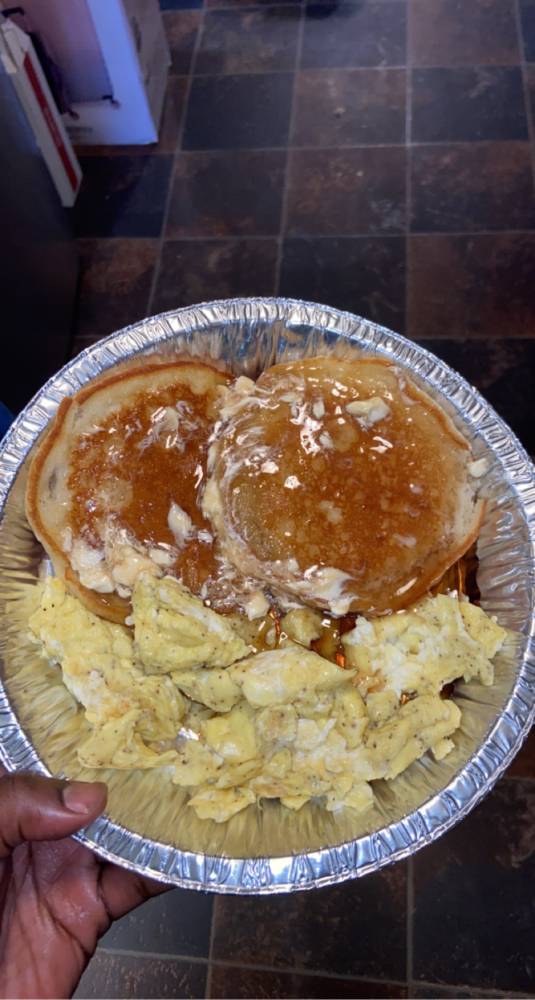

<!DOCTYPE html>
<html lang="en"></html>
<html>
    <head>
        <title>Diverse Cooking Inspirations</title>
        <meta charset="UTF-8">
    </head>
    <body>
        <header>
            
            <nav>
                <ul>
                    <li><a href="index.html">Home</a></li>
                    <li><a href="info.html">Breakfast</a></li>
                    <li><a href="form.html">Dinner</a></li>
                    <li><a href="form1.html">Users Contributions</a></li>

                </ul>
            </nav>
            

        </header>
        <main>
            <div>
                <h1>
                    <p>Diverse Cooking Inspirations For You</p>
                </h1>
            </div>
            <div>
                <h2>Inspirations/Recipes</h2>
                
                    <p>  Buttery crisped edege pancakes with a side of delicious seasoned fluffy eggs:
                    This is a quick meal of Mrs. Butter-worths pancake mix with a dash of vinilla extract, seared on a pan with butter and fluffy scambled eggs seasoned with salt and pepper cooked with butter</p>

            </div>
                
            
            
            


        </main>
        <footer>
            
            <h3>
                <p>Diverse Cooking Inspirations For You </p>
            </h3>
            <p> &copy; 2023 Tyquan Spurgeon, University Of South Carolina, Columbia South Carolina</p>

        </footer>
        

    </body>
</html>